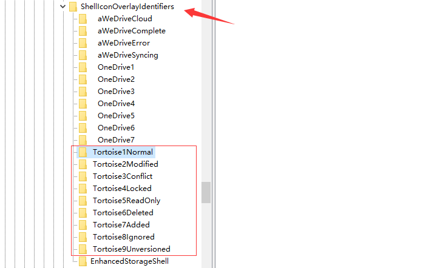
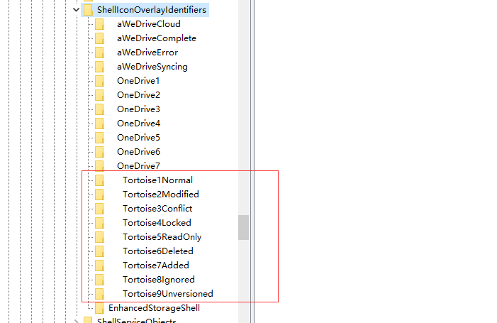

SVN 不显示状态图标的解决方法
2022年1月1日
如果你的电脑安装 TortoiseSVN 之后没有，SVN 目录没有显示状态图标，这篇文章告诉你如何解决。
原因
有很多软件都会给 Windows 目录设置状态图标，例如一些网盘软件，当然还有 TortoiseSVN。
它们是按照优先级来决定显示哪个的，如果 TortoiseSVN 被排在后面，就会导致状态图标显示不出来.
解决方法
目录图标的显示顺序是在注册表定义的,我们可以通过修改注册表来调整这个顺序
WIN + R 打开运行窗口,输入regedit打开注册表
找到这个位置:\HKEY_LOCAL_MACHINE\SOFTWARE\Microsoft\Windows\CurrentVersion\Explorer\ShellIconOverlayIdentifiers
箭头所指目录就是定义了图标显示顺序,可以看到 TortoiseSVN 排在了两个网盘的后面

我们可以通过在前面增加空格来提高他的排序，注意这里增加的空格数量要比前面的网盘目录多，这样才能排到最前面去。
按 F2 进行目录名修改,调整后如下图，改完后你可以 F5 刷新下，会发现排序已经到最前面了.

最后，打开任务管理器，重启下资源管理器就好了
最后，给大家推荐一个非常好用的在线 SVN 托管仓库：SVNBucket